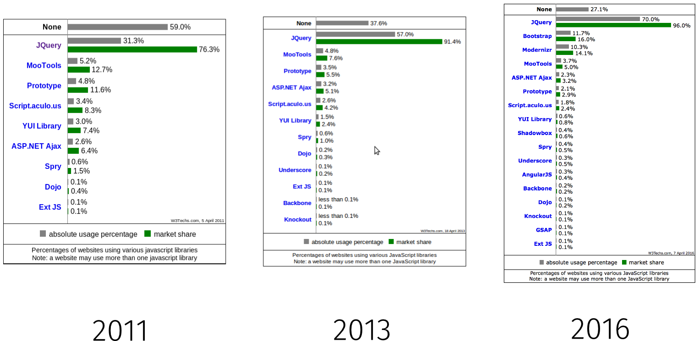
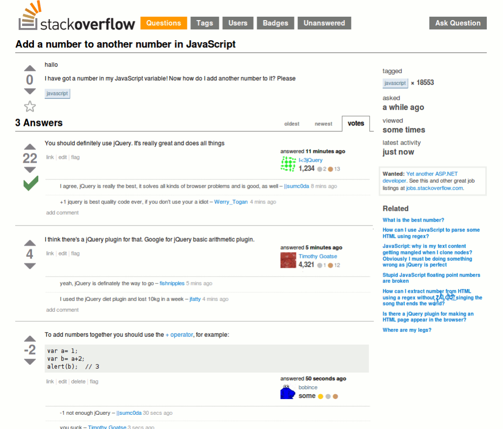

Javascript Frameworks & Libraries
CS25210 - Client Side Graphics Programming For the Web
Based on original material by Hannah Dee.
Welcome
For anyone who doesn't know me, I'm Connor.
In this session, we'll aim to cover:
- Javascript frameworks & libraries - why do we need them?
- A gentle introduction to jQuery.
- A brief look around other popular frameworks & libraries.
- Tool of the Week - Google Analytics
Question?
What is the difference between a framework and a library?
Tweets about "#aber_ftw"Answer
Typically, these terms are bounced around as meaning the same thing.
There is however, an important and defining difference: Inversion of Control.
“Don't call us, we'll call you.”
- The Hollywood Principle
Further (Recommended) Reading: Inversion of Control by Martin Fowler.
Answer
With a library, your code remains in control.
var string1 = "Hello", string2 = "World"; var myLibrary = new ExampleLibrary(); var concatString = myLibrary.concat(string1, string2);
With a framework, the control is inverted, it calls your code (e.g. on receipt of an event).
var myFramework = new ExampleFramework();
myFramework.bind("loadPage", displayMessage);
function displayMessage() {
alert("Hello World!")
}
Javascript Libraries
Libraries are collections of functions for performing common manipulation tasks.
These can be really useful, particularly when it comes to cross-browser compatibility.
Typical features include:
- Selectors (for creating handles to DOM elements)
- Iterators (to act upon a group of selected elements)
- AJAX support
- Graphics and animation
Javascript Libraries
What libraries do people know already?
Tweets about "#aber_ftw"Javascript Libraries
A small selection..

Javascript Libraries
Over recent years, the market for Javascript libraries (& frameworks) has witnessed a steady rise.
Source: W3Techs
An Intro to jQuery
jQuery has become one of the most popular libraries in use today.
Over years, the codebase has grown significantly, both internally and via plugins.
Many frameworks hold dependencies to jQuery, with some specifically built to work with the library (e.g. jQuery Mobile, jUnit)
An Intro to jQuery
Core features:
- DOM manipulation
- Cross-browser compatibility (polyfills)
- Event-driven programming
- Method chaining (not jQuery-specific)
An example:
$("li").css("background-color","yellow").slideUp("slow");
The $() function
The jQuery function (hosted within the core set of libraries) provides the main "gateway" for accessing the library and its functions.
The function is heavily overloaded, and can be used in one of four ways:
- CSS selectors
$('p.text-label') // Returns jQuery object with all DOM elements that match. - DOM element, document or window object
$(window.document) // Returns jQuery object representing the document.
- HTML code
$('<p class="text-label">Hello World!</p>') // Returns jQuery object. - JS functions
$(printGreeting) // Invokes function once DOM is ready.
jQuery Objects
When using jQuery, you will almost always be working with jQuery objects, rather than directly with DOM elements.
jQuery objects provide a number of additional functions that aim to make DOM elements less awkward.
The jQuery object behaves very much like an array, where we can reference particular elements based upon their position within the document.
$("section").length; // Number of <section> elements within the body.
$("section")[1]; // Access the second <section> element.
$("section")[1].html("<p>Hello World!</p>"); // Set the innerHTML for the second <section> element.
jQuery Objects
jQuery objects also provide useful metadata about a given DOM element or function.
$("section").selector; // Returns "section"
$("section").context; // Most likely returns "document"
$("section").jquery; // Returns jQuery version number (e.g. "1.4.2")
They can also allow your code to scale the DOM hierarchy.
$("section").parent(); // Returns jQuery object for <body> or perhaps <div>.
$("li.selected").css("background-color", "red").siblings().css("background-color", "white");
$("ul").children().first(); // Returns first <li> element.
// Could also do: $("li").first();
Some Examples
1) Get/Set CSS attributes
// Get the associated CSS property.
$("h2").css("color") // Returns "rgb(45, 62, 79)".
// Change the background-color CSS property for all <H2> elements.
$("h2").css("background-color", "#47D591");
How could we restrict this to only the <H2> element above?
$("#changeHeadingColourButton").siblings("h2").css("background-color", "#47D591")
Some Examples
2) Get/Set HTML attributes & content
// Change the "href" attribute of an <A> element.
$("a").attr("href","http://www.qinusty.co.uk/dapstep.mp3");
// Update the content for the <A> element with the content of the <H2> element.
$("a").text($("a").siblings("h2").text());
// Update the innerHTML for the <A> element with the content of the <H2> element.
$("a").html("<i>" + $("a").siblings("h2").text() + "</i>");
Some Examples
3) Method Chaining & Iteration
In the case where a collection of jQuery objects are returned, jQuery will iterate through these implicitly.
// Iterate through all available <LI> elements and change their background colour.
$("li").css("background-color", "red");
For more complex behaviour, we have the option of using each().
$("p").each(function(i) {
$(this).css("background-color", "red");
$(this).append(" (that was li number " + i + ")");
})
jQuery Events
jQuery also comes equipped with a wide variety of event handlers.
Many of these are designed to handle cross-compatibility issues (lookin' at you IE...)
jQuery events can be applied to nearly any element (represented as a jQuery Object)
// Add 'click' event handler on <LI> elements.
$("li").on("click",function() {
$(this).css("background-color","blue");
});
// Provide custom logic on <FORM> submit.
$("form").on( "submit", function( event ) {
// Perform custom action with form data.
});
// 'Special' event triggered when DOM is ready.
$(document).ready(function() {
// Initalise component or display content.
});
Obtaining jQuery
You can grab jQuery from the official project website.
When including in your own projects, you have two choices:
- Download JS code and reference locally.
- Access via a Content Delivery Network
<script src="lib/js/jquery-1.12.3.min.js"></script>
<script src="https://code.jquery.com/jquery-1.12.0.min.js"></script>This reduces server load, and can provide optimised delivery of files.
In either case, make sure to refer to the minified version in production use.
Exercise 1: jQuery
Save this file to your IWP scrapbook, and try using some of the methods covered so far to alter the appearance.
Do whatever you want, use your imagination. Also feel free to fire up the jQuery docs and try some other features.
For those lacking imagination, some ideas:
- Change the
<H1>text content to a new value. - Change the
<H1>background colour. - Edit the
<H1>elements so that it calls a JavaScript functiononLoad(). - Use this new function to style margins, fonts, etc.
- Edit the function
buttonpressed()so that it modifies the background colour of the page.
Any problems, flag myself, Edel or other demonstrators over.
A Word of Caution
There is no doubt that jQuery can make the life of a web developer much less painful.
However, as good software developers, you have to know what constitues the right time and place to use it.
jQuery has a BIG codebase, that is inevitably going to add some additional bloat to your website or application.
jQuery should not be used as a Golden Hammer.
Make sensible choices to the benefit vs. cost balance with using jQuery over vanilla JS.
A Word of Caution
Please, don't be this person.
Frameworks
As we've already learned: frameworks tend to enforce some kind of structure or convention on our code.
This has a few advantages:
- Promotes good development practice.
- Enforces a set standard of code layout and behaviour (useful when asking for help from StackOverflow).
- Typically makes future maintenance more manageable (understandable functions, well-documentated behaviour).
- Takes advantage of latest technologies, with cross-compatability taken care of for us.
It would be uncommon for a complex web-application to not adopt at least some form of framework.
Frameworks
Nowadays, there a frameworks available for almost any kind of task:
- MVC: AngularJS, BackboneJS, EmberJS
- Hybrid-Desktop Applications: AngularJS, BackboneJS, EmberJS